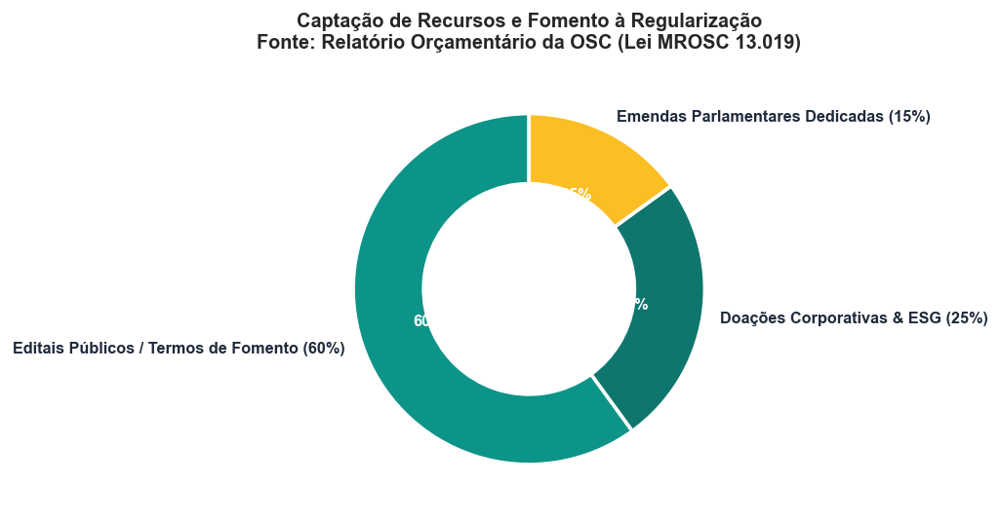
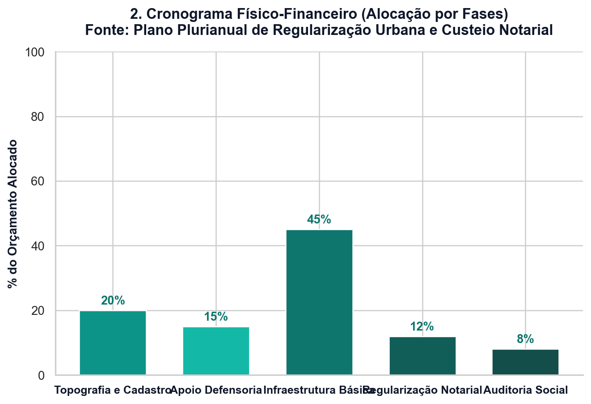
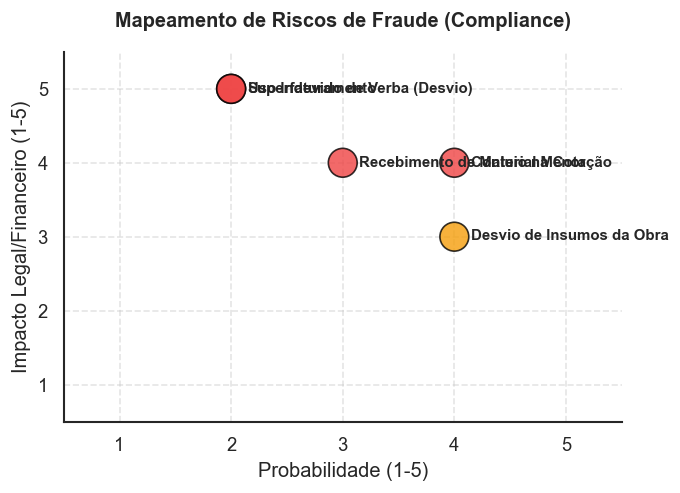
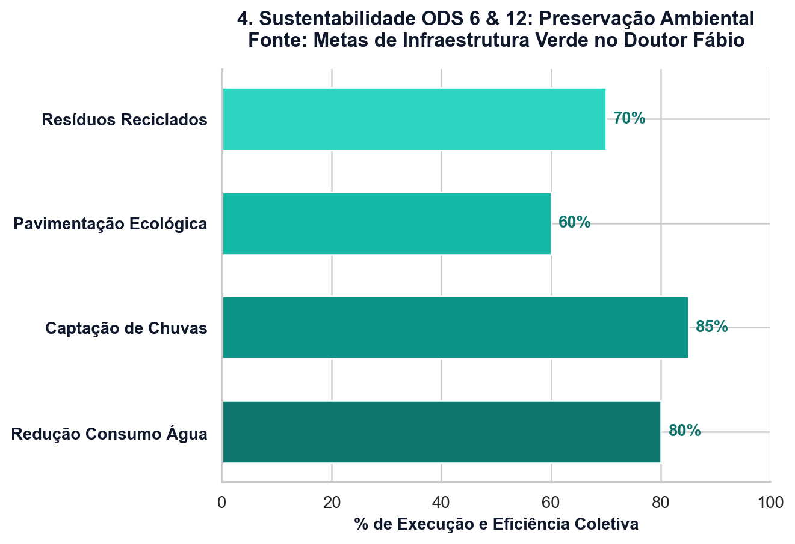
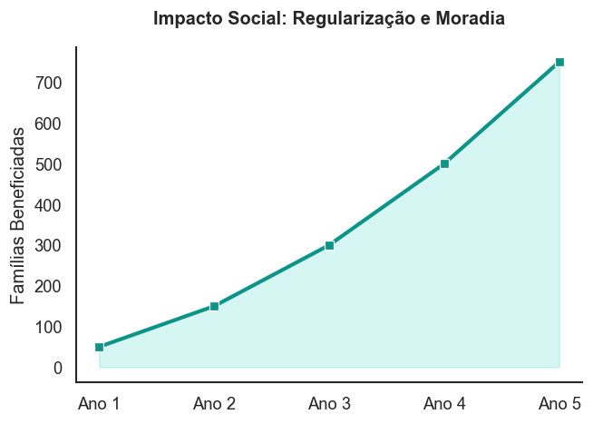

Viabilização habitacional sob a ótica das disciplinas integradas de negócios.
Integrantes: André, Aliny, Michely e Everson
A exclusão habitacional histórica e a irregularidade fundiária crônica na região do bairro Dr. Fábio, em Cuiabá, demandam intervenções focadas no bem-estar comunitário (Almeida, 2023). Com o intuito de dirimir essas vulnerabilidades de moradia, as ações não podem se guiar unicamente por interesses econômicos comerciais de lucro corporativo. Dessa forma, a constituição de uma **Organização da Sociedade Civil (OSC)** desponta como a via ideal.
O modelo associativo de OSC, sob a égide da Lei do MROSC, habilita convênios de cooperação com o Poder Público para promover regularização fundiária de interesse social (REURB-S).
Nesse sentido, a imunidade tributária e a ausência de distribuição de dividendos garantem que todo recurso seja revertido no aprimoramento urbanístico e na solidez da posse comunitária.
Para viabilizar este empreendimento de habitação social de forma não lucrativa, a organização adotará a estrutura de Organização da Sociedade Civil (OSC), constituída sob a forma de Associação Civil (Almeida, 2023). Ademais, verifica-se que este modelo atende a dois requisitos institucionais específicos do projeto:
Assim sendo, o superávit financeiro obtido é obrigatoriamente e integralmente reinvestido no projeto, assegurando a transparência fiscal e a destinação social dos recursos.
A gestão de conformidade na administração pública exige a identificação e mitigação prévia dos riscos operacionais (Barbosa; Souza, 2022). Desse modo, o mapeamento estruturado visa assegurar o cumprimento dos termos de fomento e a prestação de contas dos recursos:
| Risco Mapeado | Probabilidade | Impacto | Medidas de Prevenção e Mitigação |
|---|---|---|---|
| Rejeição da prestação de contas pelo órgão público | Média | Alto | Treinamento do setor financeiro e realização de conciliação bancária 100% eletrônica diária. |
| Desvio ou aplicação incorreta de subvenções | Baixa | Alto | Segregação estrita de contas correntes e rastreabilidade individualizada de despesas. |
| Atraso na liberação de parcelas públicas | Média | Médio | Constituição de fundo comunitário emergencial para mitigar descontinuidades curtas. |
| Conflitos com moradores locais ocupantes | Média | Alto | Realização de cadastramento socioeconômico individualizado e canal de ouvidoria participativa. |
Os indicadores de sustentabilidade da OSC refletem o compromisso com a conformidade socioambiental e a governança corporativa (Almeida, 2023). Nessa mesma direção, a aderência aos Objetivos de Desenvolvimento Sustentável (ODS) da ONU apoia o progresso no bairro Dr. Fábio:





Sistemas de captação pluvial e preservação da drenagem natural do cerrado em Cuiabá. Além disso, monitora-se a redução de resíduos modulares na alvenaria.
Fomento à autogestão comunitária e mutirões de trabalho cooperativo regulamentado. Adicionalmente, busca-se a redução de morbidades associadas ao saneamento básico precário.
Conselho administrativo participativo e transparência ativa na prestação de contas digital. Por conseguinte, adota-se a verificação independente de integridade fiscal.
O ciclo de vida de um projeto financeiro acadêmico envolve o encadeamento de etapas de alocação de recursos, divididos entre a captação, aplicação intensiva de capital nas obras e a consolidação de receitas (Ferreira, 2023). Diante disso, o ciclo foi segmentado para afastar riscos comerciais tradicionais e garantir a destinação vinculada de subvenções:
O fluxo de recursos públicos e privados obedece a um cronograma rígido de liberação por metas de desempenho físico:
Foco na habilitação para editais específicos do MROSC, regularização jurídica preliminar da área territorial e aprovação regulatória. Ademais, essa etapa antecede a liberação dos recursos.
Liberação parcelada conforme metas de medição física. Sob essa ótica, o fluxo de caixa é blindado para que flutuações de mercado não interrompam o cronograma de obras.
O engajamento estratégico das partes interessadas ou *stakeholders* (partes interessadas) reduz litígios nas intervenções territoriais da OSC no bairro Dr. Fábio (Couto et al., 2021). Nesse sentido, o mapeamento estabelece as seguintes funções institucionais:
A mediação extrajudicial promove a resolução de conflitos sem a necessidade de judicialização (Dias, 2022). Em face do exposto, o protocolo compreende as seguintes ações práticas:
Estrutura de fomento de cunho epistemológico que confere legitimidade científica, jurídica e regulatória aos pilares constitutivos do projeto de habitação de interesse social (ABNT NBR 6023):
Diante do exposto, a estruturação técnica de uma OSC garante a governança em projetos habitacionais de interesse social (Silva, 2023). Por conseguinte, a integração da solvência financeira com governança cooperativa e conformidade fiscal assegura moradias populares sustentáveis.
Integrantes: André, Aliny, Michely e Everson